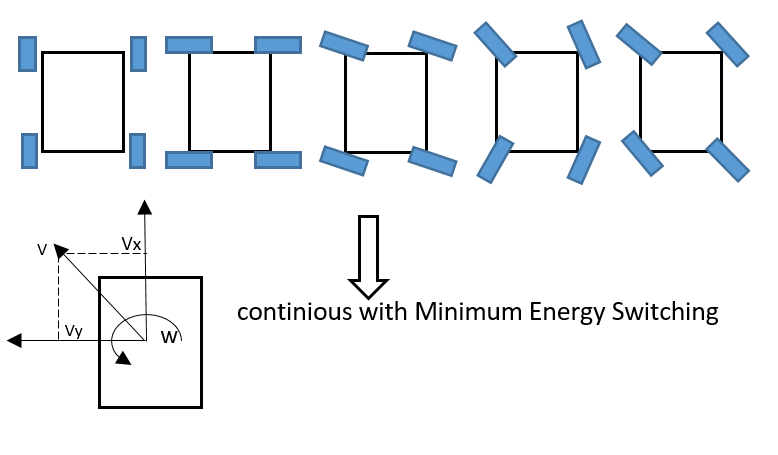
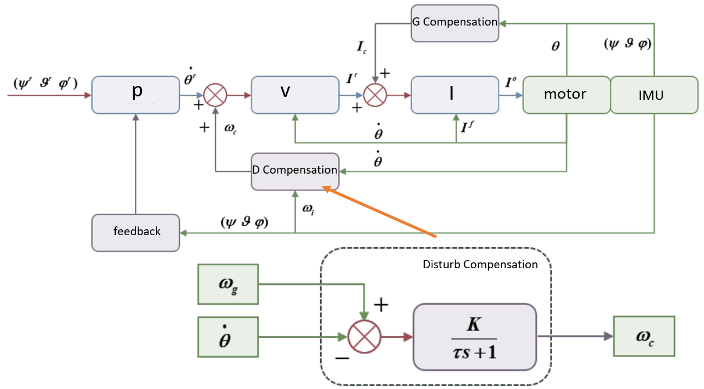
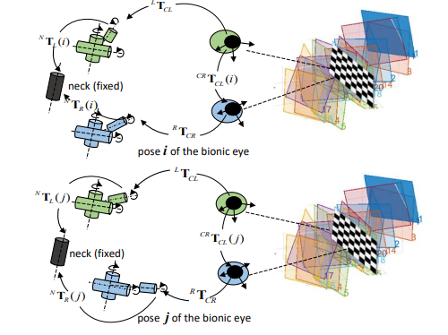
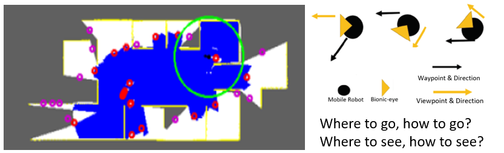
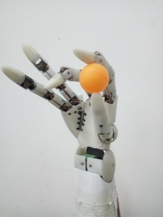

I am currently a robot
algorithm engineer at Huawei's Central Research Laboratories, focusing
on the key technologies of robots like motor control, robotic arm
motion planning and dynamics control and wheel-leg robot whole-body
nonlinear MPC control. I graduated from
Beijing Institute of Technology (BIT) with a
bachelor's degree in mechanical and electronic engineering in 2017. I
was subsequently guaranteed enrolled in the Robotics Institute of BIT
and got a master's degree in 2020. I received joint training and
graduate guidance at the University of Auckland (UoA), New
Zealand.
Publications
An integrated two-pose calibration method for estimating head-eye
parameters of a robotic bionic eye[J].
IEEE Transactions on Instrumentation and Measurement,
2019, 69(4): 1664-1672. Xiaopeng Chen,
Changjin Wang,
Weizhong Zhang, et al. (2nd Author, the first Author is my tutor)
Paper
The Design and Development of an Anthropomorphic Worm-Gear Driven
Robotic Hand: BIT-JOCKO. 2019 IEEE 4th
International Conference on Advanced Robotics and Mechatronics
(ICARM). Changjin Wang, Yao Sun, Jiafeng Xu, etc. Best Paper Finalist
Paper
Work & Research
(The following work is finished as the main contributor; some work is
publication-limited)
Hybrid robot consisting of 18-DOF legged robot + robotic arm
The entire system consists of a 12-DOF wheel-legged robot + 6-DOF robotic
arm. The legged robot adopts a similar algorithmic framework as ETH and
uses Acados's nonlinear solver. The contact force at the wheel-foot is decomposed into normal and
tangential components, with friction cone constraints incorporated as
nonlinear constraints in the nonlinear MPC. The remaining constraints involve kinematic feasibility. Unlike the ETH Anymal,
the entire wheel-foot system is closer to an Ackerman vehicle in a top-down view. Furthermore,floating-based kinematics and dynamics are
employed to achieve 18-DOF full-body Jacobian null-space control and
whole-body grasping. It can also achieve balance while crossing obstacles.
Some demos:
A
B
C
D
E
F
Explain: A: Simulation and comparison of a 12-degree-of-freedom car chassis in inclined, dual Ackermann, and in-place spinning mode.
B: Crossing slopes and stairs while maintaining a balance of a cup at the surface.
C: Servo end-effector pose during whole-body stationary movement.
D: 18-degree-of-freedom pecking mode. E: Chassis with dual-wheel standing. F: Simulation of an 18-degree-of-freedom door opening.
An unified implementation of the point-mass model for the 4WIS robot
In this work, I approach adopt a continuous optimization mindset to unify
the four-wheel modes. A single optimization formula is used to address the
issues of lateral, oblique, Ackerman steering, and in-place spinning
within the four-wheel steering context which can achieve optimal energy consumption. This is in contrast to the
traditional 4WIS independent control methods, which rely on discrete
judgments to switch between motion modes. With this method, the controller
can automatically decompose any VX, VY, W commands given to the vehicle in
a two-dimensional plane into a point-mass model, which means you can follow any trajectory in the plane within max velocity!
Some demos:

A
B
Explain: The left image illustrate various motion modes of an AGV, including four-wheel straight-line motion, four-wheel lateral motion, four-wheel oblique motion, dual Ackermann steering, and oblique turning mode.
Video A is a simulation where the four wheels continuously switch between multiple modes, all controlled by a single optimized equation for seamless motion.
Video B is a physical demonstration of the simulation shown in A.
A low-cost, low-inertia, low-mass compliant force-controlled robotic arm
In response to the challenges faced by mobile robots in terms of the
existing UR arm, which is costly, heavy, and inconvenient for mobile
robots like quadruped deployments, a new lightweight and low-inertia
robotic arm with a PIEPPER configuration has been designed. This arm
completes kinematics, dynamics, trajectory planning, motion interpolation
and polynomial interpolation based on self-developed FOC (Field-Oriented
Control) drivers. interpolation is integrated into the FOC driver to achieve higher precision and smoothness. Moveit architecture has been discarded, and in its
place, a real-time high-performance lightweight robot library has been
independently written. The 5kg arm can carry a 2.5 kg payload with a
repeatability of about 1mm and reachable length of 920mmand it is cost-effective, making it very
suitable for mobile robots to carry.
Some demos:
A
B
C
Explain: Video A is a robotic arm moving in a straight line, with a 2KG load at the end, drawing a rectangle.
Video B includes various modes of the robotic arm, involving multiple curved motions in joint space and Cartesian straight-line motion.
Video C is the robotic arm operating in a zero-force mode with dynamic compensation.
One biomimetic eye attitude stabilization algorithm based on gravity
compensation
This project is a research topic during the master's degree stage,
focusing on how biomimetic eye robots maintain mechanical stability during
motion. A biomimetic eye mechanical stabilization algorithm based on
gravity compensation and attitude disturbance observation has been
proposed. It compensates for the dynamic response delay caused by gravity
and serves as a force feedforward. Meanwhile, an observer is utilized to
predict and observe disturbances in advance, which acts as a velocity
feedforward. This approach has achieved a disturbance rejection of 5Hz and
above with a peak angle of 10°, while maintaining the end-effector's
stability within 0.5°.

An online bionic eye external parameter calibration and computation
algorithm
For biomimetic eye robots, the binocular cameras require movement, but
once the cameras move, the external parameters (ex-params) are disrupted.
To address this issue, a method for offline calibration and online
real-time computation of binocular external parameters is proposed. This
method operates the biomimetic eyes to compute the external
parameters during motion. As a result, the binocular cameras can
accurately locate points in the overlapping field of view and recover
depth information, even while moving. Compared to fixed cameras, this
approach increases the field of view for moving cameras.

Explain: The left is a schematic diagram of the algorithm, which consists of two steps,
taking multiple sets of pictures at two different locations.
The right video involves using the algorithm for depth recovery. It is not the neck that is rotating, but the eyes; rather,
the extrinsic parameters of the two cameras are continuously changing.
Compared to traditional fixed cameras, the Field of View (FOV) can increase by 200%.
The relationship with the previous work is that one is responsible for image stabilization, and the other for increasing the field of view and actively
focusing on the ROI.
A biomimetic eye active exploration algorithm based on eye-foot
coordination
Utilizing biomimetic eyes as an active stereo vision platform, mounted on
a mobile robot to achieve Active SLAM (Simultaneous Localization and
Mapping). By leveraging the projection maps of Octomap, combined with
Gmapping's contour maps, the algorithm seeks visual reconstruction voids,
which are the missing points in the 3D scene. Using an effect function to
determine the access order of these void points, and integrating the BV
(Best View) concept, the algorithm employs the ray projection method to
determine the information gain of the field of view. Furthermore, based on
position-based visual servoing. The biomimetic eyes are directed to always
gaze in the direction of maximum information gain. An exploration strategy
based on eye-foot coordination is set, and tasks are allocated based on
the ratio of 3D scene coverage to 2D map coverage. This enables the robot
to efficiently complete full-angle 3D reconstruction and 2D map
construction in completely unfamiliar environments with a one-click start
and full autonomy.

Explain: The left image illustrates the algorithm's schematic. The algorithm has two types of boundary points: the purple frontier points, which are the laser radar’s frontiers, and the red frontier points, which are the visual map’s frontiers.
It utilizes lasers for positioning and to expand the 2D sensory range. The blue parts represent the area of visual 3D reconstruction, while the gaps are the sections awaiting reconstruction. The core of the algorithm is to plan the visiting sequence
of these two types of points for autonomous exploration.
The right video shows the complete autonomous active 3D reconstruction using this algorithm, without any pre-settings. The green arrow indicates the direction of the bionic eye’s gaze, which is also the direction of visual servoing.
The red arrow points to the visual frontier access points, and the blue arrow indicates the laser frontier access points.
An adaptive dexterous hand
The worm gear is used to realize the self-locking of the dexterous hand
power-off structure, which can theoretically bear the weight within the
allowable range of the structural strength. It adopts a modular knuckle
design, a highly anthropomorphic design, and has 20 degrees of freedom. It
also increases the degree of freedom of the palm side swing, increasing
the palm grasping space by 30%.

Explain:
The left image displays the appearance of the dexterous hand. The right video reveals the structural design of the dexterous hand,
including grasping videos, and simple teaching using a data glove
Skills:
Coding: C++, Python, MATLAB
Hardware: PCB design, mechanical design, besides, I have a set of my own highly compact FOC controller which supports dual
encoder 3-ring control including hollow shaft encoder with
various feedforward and GUI interfaces, familiar with AI NPU infer.
Software: Solidworks, Matlab, QT, Altium Designer
Algorithm: Good at robotic arm lower-level kinematics, floating base dynamics, and trajectory planning, with self-written
libraries. I also have strong theoretical derivation ability and the ability to insight into the essence and bottleneck of
problems, familiar with optimal control, non-linear MPC.
Honors:
Worked at Huawei for 3 years, received two annual A awards, top 15%, and
one annual B+.
National Scholarship （研究生国家奖学金）
National Motivational Scholarship (国家励志奖学金)
Tang Nanjun Scholarship （唐南军奖学金）
SMC Scholarship （SMC 奖学金）
First-class Academic Scholarship for Graduate
Students （研究生一等学业奖学金）
First Prize in the National College Student "Challenge Cup"
Competition （全国大学生挑战杯一等奖）
First Prize in the National Aerospace Model
Competition （全国科研类航空航天模型锦标赛一等奖）
Second Prize in the National College Student Energy Saving and Emission
Reduction Competition （全国大学生节能减排大赛二等奖）
Top Ten Projects in the National College Student Innovation and
Entrepreneurship Annual Meeting （全国互联网+ 大学生创新创业年会双十佳）